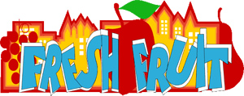
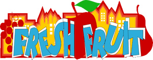
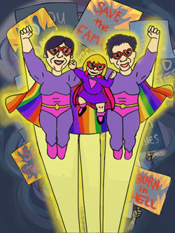

Fresh Fruit Festival

Fresh Fruit Festival
FRESH FRUIT FESTIVAL
ALL OUT THEATER
ANGEL IN MY HEART by Bob Ost
A chamber musical romance about love and shopping in the life-and-death time of pre-cocktail AIDS.
COMING OUT MUSLIM: RADICAL ACTS OF LOVE by Wazina Zondon
A new play capturing the stories and experiences of being at the intersections of Islam and queerness and its relationship to family, lovers, one’s sense of self and relationship with their faith.
Performs Tuesday, July 8 @ 9pm; Wednesday, July 9 @ 9pm.
DANCE WITH THE SUN by Scott Ramsey & Stella Hlad (World Premiere)
An autobiographical play about a mother and son’s revelatory moments of reflection on his gayness. A must for gay children and their parents.
Performs Tuesday, July 8 @ 7pm; Wednesday, July 9 @ 7pm; Thursday, July 10 @ 7pm.
EVERYBODY ELSE’S LIGHT by Kyle Jackson (World Premiere)
Rich storytelling and humor combine in this coming of age story of a young African-American man trying to find his inner light.
Performs Wednesday, July 16 @ 8:30pm; Thursday, July 17 @ 8:30pm; Saturday, July 19 @ 2pm.
JUST HIT ME by Brian O’Neill (Special Reading)
The story of a cross dressing opera singer/electrolysist who causes a domestic crisis when she tries to assert a claim on an elderly lover’s estate with David Drake.
Performs Sunday, July 13 @ 12pm. FREE ($10 Suggested Donation)
(MARY)TODD by Dennis Bush (World Premiere/Solo Show)
An hilarious and heartbreaking first-person account of the events leading up to and following the murder of (Mary)Todd’s partner.
Performs Monday, July 14 @ 9pm; Saturday, July 19 @ 9pm.
QUEERSPAWN PROPHET by Emma Tattenbaum-Fine (World Premiere/Solo Show)
A daughter’s coming of age journey through the AIDS crisis, suburbia, and life with two moms.
Performs Saturday, July 12 @ 5pm.
SUNSHINE QUEST by William Fowlkes (World Premiere)
A new play set in a social club for senior gay men, where we find that the later in life you come out, the weirder it’s gonna be.
Performs Friday, July 11 @ 7pm; Saturday, July 12 @ 2pm; Sunday, July 13 @ 4:30pm.
THE CONVERSION OF ALICE B. TOKLAS by Carol Polcovar (World Premiere)
The shadowy figure of Alice B. Toklas, played by two time Obie award winning actress Rosina Fernhoff, comes alive as she examines her life and her desire to become a Catholic at the age of ninety-three.
Performs Sunday, July 13 @ 7pm; Wednesday, July 16 @ 6:30pm; Sunday, July 20 @ 2pm.
THE PEDDLER’S TALE by Liz Thaler (U.S. Premiere)
A fable with a modern disposition, where sex, death, and magic intertwine—and “happily ever after” starts to lose its meaning.
Performs Tuesday, July 15 @ 7pm; Thursday, July 17 @ 6:30pm; Saturday, July 19 @ 7pm.
VGL 5’4” TOP by Lucas Brooks (Solo Show)
One man’s struggle with online dating and its effects on his body image. Funny and Smart.
Performs Monday, July 7 @ 9pm.
ALL OUT SHORTS I: TEN-MINUTE PLAYS
We present the finalists of our 2014 Fresh Fruit Festival Short Play Contest–Chalk in the Pocket by Lavinia Roberts: What kind of witchcraft are those lesbians doing in their apartment?: Rooftop Project by MF Shyer How far will a gay couple go to get the co-op of their dreams? :You Looked Hot in that Dress You Stole From Walmart,by Catherine Weingarten Walmart, Shoplifting and ….. , Ruskala by Ashlee Mundy Why be a Lesbian activist and what is the price? and Happy & Gay by Mary Steelsmith What are those two church ladies on the decorating committee doing in the Church Fellowship Hall.
Performs Sunday, July 13 @ 9pm.
All Out Shorts II: WHAT ARE FRIENDS FOR?
Three plays dealing with the meaning of friendship in the lgbtq community: THE UNUSAL ENGAGEMENT OF CHESTER PRINGLE by Jonathan Pearson (World Premiere/Musical) A musical about a young man’s confession of true love to his mother. + JEREMY AND by Andy Ottson (World Premiere) A gripping short about the struggles of coming out as a transgender person in a society still coming to grips with its own intolerance. + READY by Joan Lipkin (NY Premiere) A play examining lesbian romance in middle age.
Performs Friday, July 18 @ 7pm; Sunday, July 20 @ 3:30pm.
ALL OUT SHORTS III: LEGENDS THROUGH A GLASS QUEERLY
Three short works dealing with the queer and mythical: ECHO, NARCISSUS, NARCISSUS, ECHO by Brandon Monokian (World Premiere) A work about unrequited love through the lens of mythological characters in present day. + THE BLUE DJINN by Tom Rowan(NY Premiere) A tender, funny, sexy, and mysterious play about learning to trust between a composer and a go-go boy. BROTHER LOVERS by Zave Martohardjono (World Premiere) an experimental play and multimedia performance that takes as its subjects queer desire, self-hood, and loss of homeland.
Performs Friday, July 18 @ 9pm; Sunday, July 20 @ 12pm.